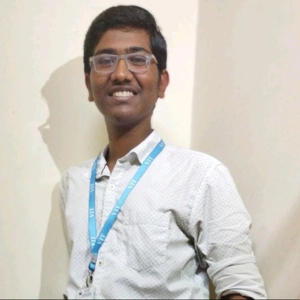
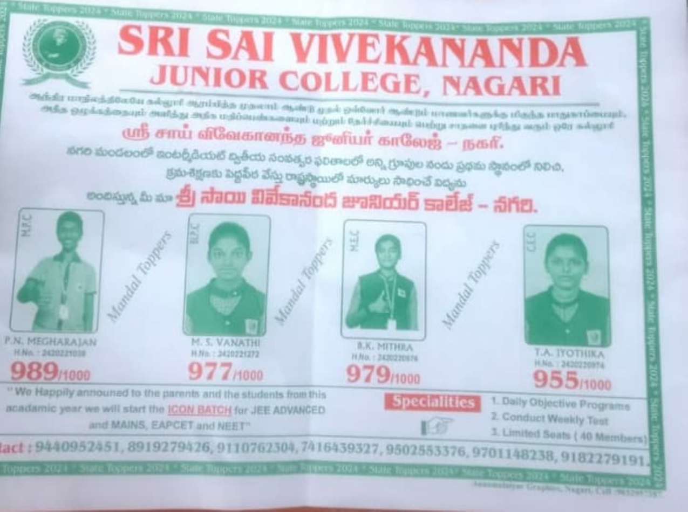
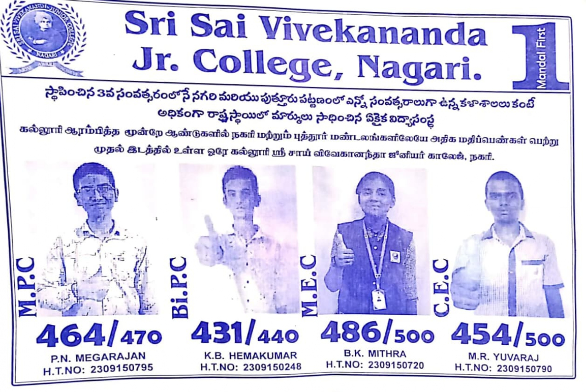
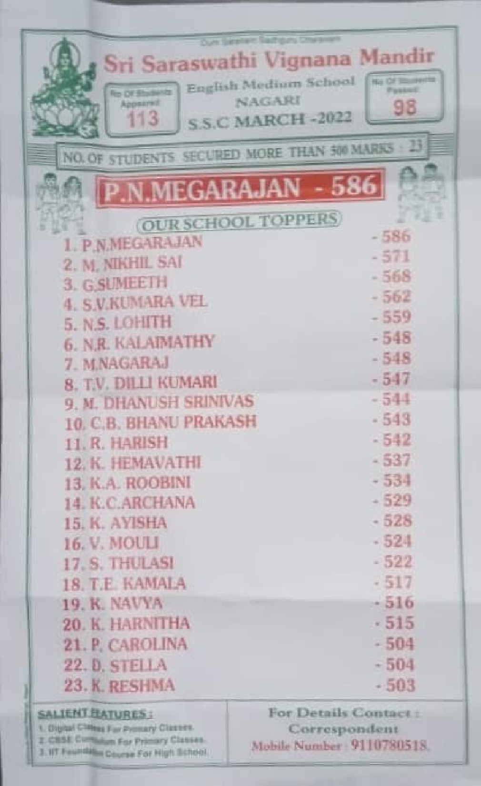
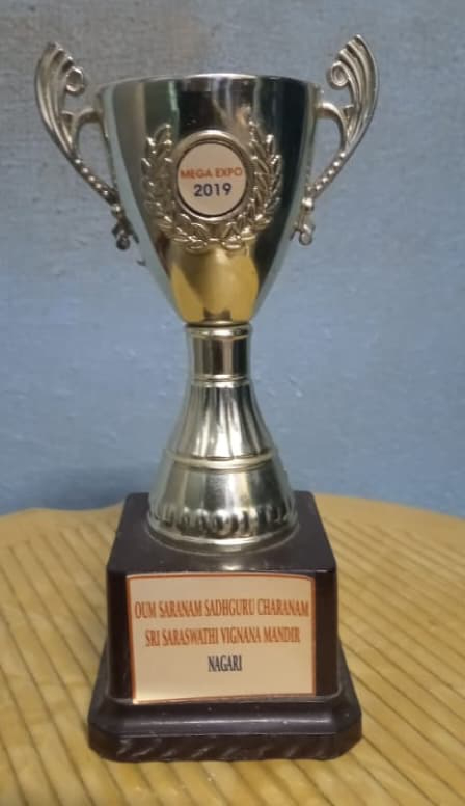
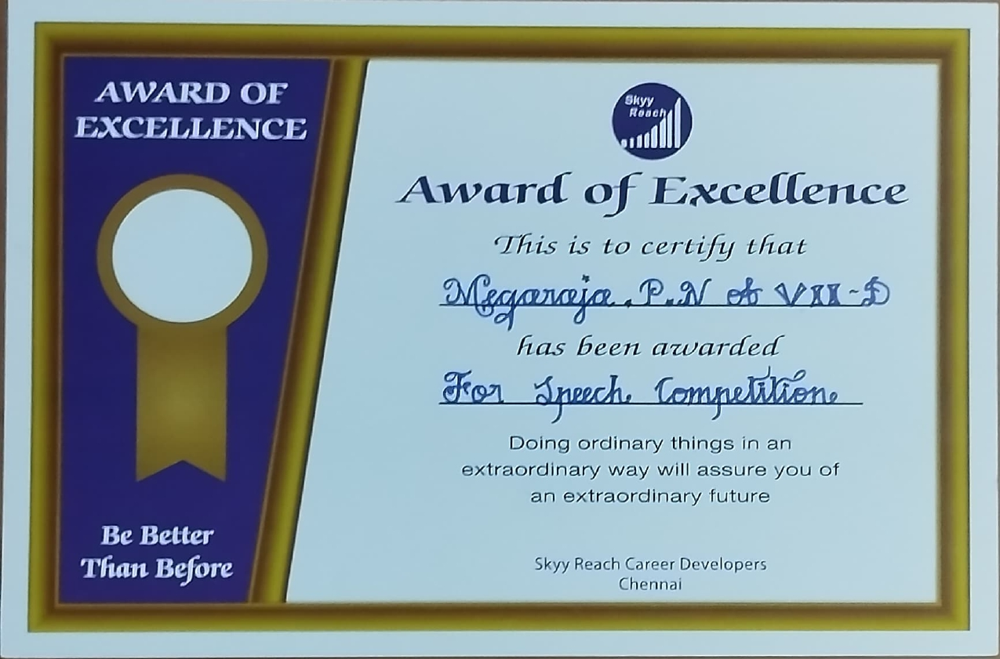
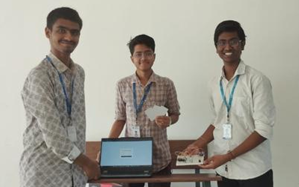
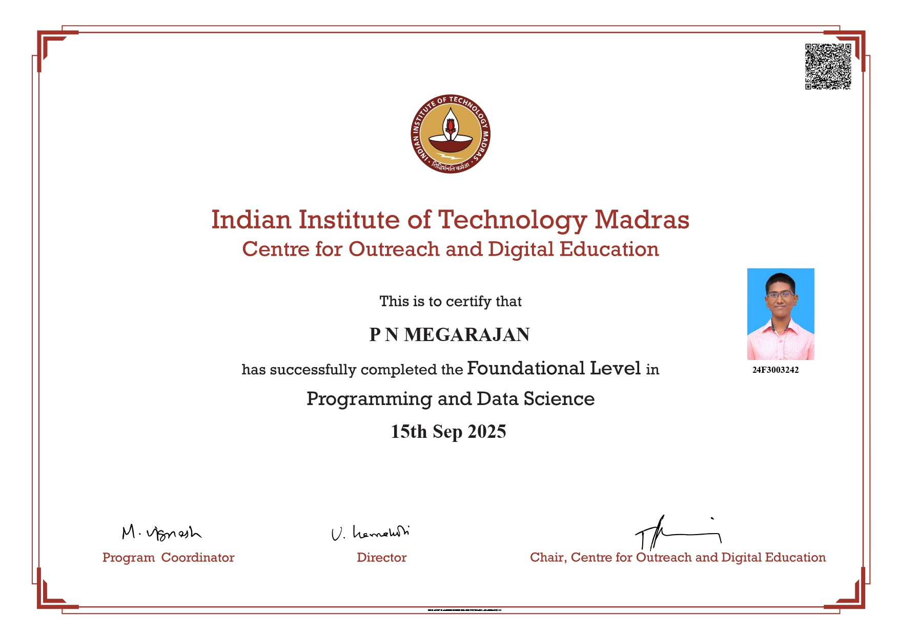
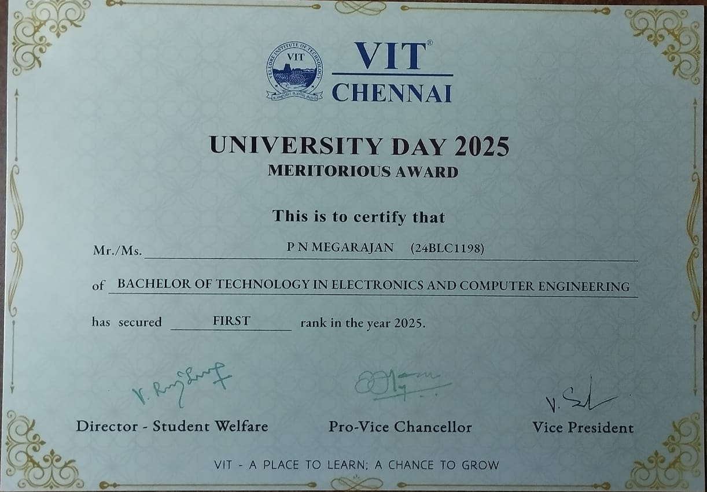
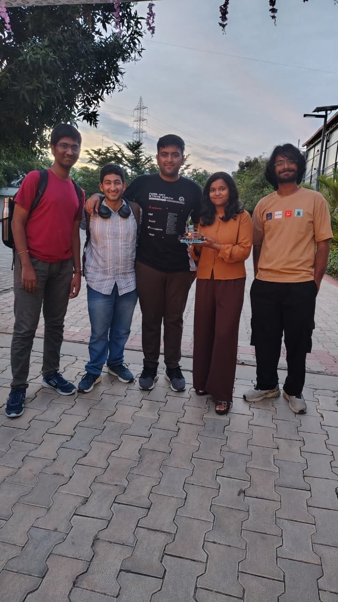

|  |
Megarajan's Portfolio Website |
P N Megarajan |
Data Science & Machine Learning Enthusiast
I am a 2nd year B.Tech student in Computer Science (Core) at VIT Chennai, India, and currently pursuing |
| Program | Institution/Board | Percentage/CGPA | Year |
|---|---|---|---|
| B.Tech Computer Science(CORE) | VIT Chennai | 9.57 CGPA | 2024-Present |
| BS Degree – Data Science | IIT Madras | 7.63 CGPA | 2024–Present |
| Intermediate College Leaving Certificate | Sri Sai Vivekananda Junior College, Andhra Pradesh | 98.9% | 2022-24 |
| Secondary School Leaving Certificate | Sri Saraswathi Vignana Mandir, Nagari | 97.67% | 2021-22 |
| Achievement / Award | Description | Organization / Platform | Year |
|---|---|---|---|
| Rank 1 – First Year B.Tech | Secured 1st rank in the First Year of B.Tech | VIT Chennai | 2024-25 |
| State Rank 4 – Class 12 | Achieved 4th rank at state level in Class 12 Board Examinations | AP Board of Intermediate Education | 2023-24 |
| State Rank 5 – Class 11 | Achieved 4th rank at state level in Class 11 Board Examinations | AP Board of Intermediate Education | 2022-23 |
| Mandal Rank 1 and District 2nd– Class 10 | Secured 1st rank at mandal level and 2nd rank at district level in Class 10 Board Examinations | SSC Board | 2021-22 |
| Third Prize – Mathematics Expo | Won 3rd prize in school-level Mathematics Exhibition | Sri Saraswati Vignana Mandir,Nagari | 2019 |
| Award of Excellence – Speech Competition | Awarded for writing and delivering a public-awareness speech titled “As a Responsible Citizen, I Would Do…” | Sky Reach Career Developers, Chennai | 2019 |
|
 |  |
|  |  |  |
|  | "Real-Time RFID-Based Inventory Tracking System for Jewellery"This project focuses on developing a smart RFID-based inventory tracking system for jewellery management using the ESP8266 microcontroller and RC522 RFID reader. Each jewellery item is tagged with a unique RFID tag, enabling contactless identification and automated inventory updates. The system continuously scans items in the showcase and displays real-time inventory details such as item ID, status (present, sold, or missing), and scan time on a web-based dashboard hosted by the ESP8266. If an item is removed without being marked as sold, the system instantly triggers an alert, improving theft detection and inventory accuracy. By integrating RFID technology with IoT-based monitoring, this solution reduces manual effort, enhances security, and provides an efficient and cost-effective approach for real-time jewellery inventory management. |
|  |  |
|  | "IIT Bombay Techfest 2025 – Meshmerize (Bengaluru Zonals)"Participated in the Meshmerize robotics competition at the IIT Bombay Techfest 2025 Bengaluru Zonals as a member of the Dreadnought Robotics Team. Our team designed and built a Line Following Maze Solver Bot capable of navigating a complex maze by detecting and following predefined paths. Although we were unable to progress to the next round, the competition provided valuable hands-on experience in robotics, including sensor calibration, real-time decision making, and on-field debugging under time constraints. The event offered practical exposure to competitive robotics standards and highlighted the importance of robustness, precision, and teamwork in real-world scenarios. This experience significantly enhanced my understanding of robot navigation, control logic, and competitive engineering challenges, strengthening my interest in robotics and embedded systems./p> |
|
|
|
|
|
|
|
|
|
|
Professional Working proficiency - Primary language for academic and professional communication
Native proficiency - Mother tongue, fluent in speaking, reading, and writing
Limited working proficiency – Able to understand and communicate in basic professional and everyday contexts
Copyright © P N Megarajan 2025